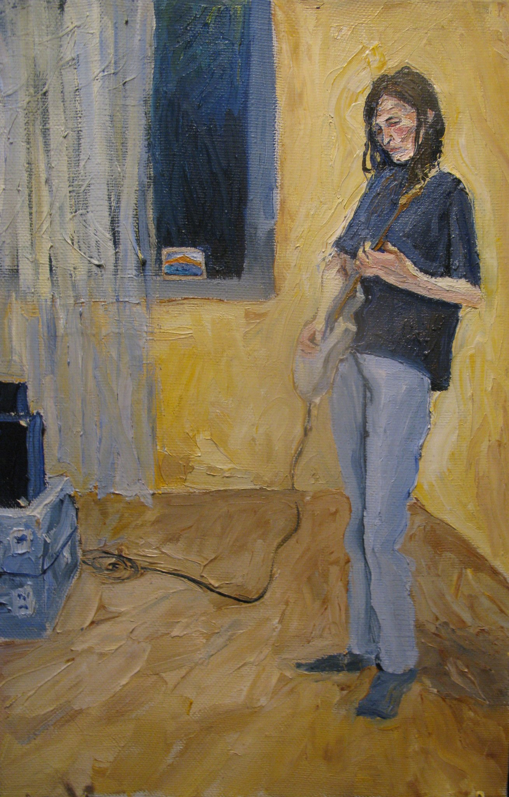

#!/usr/bin/env rm
Музыка
Fata Morgana
Новая весна
कल्प
Апрель
Туман над росстанью
Ко Святому Озеру
Бумажный змей
Consolamentum
Паутина
Предания Старого Парка
За Гранью Кристалла
Свет Ветра
Nevermore
Три дня в Неаполе
Terra Incognita
Долина Мориона
Нуар
По следу
Дочь Девяти Лун
То, что оставил дождь
Всё будет не с нами
В отражении Красной Луны
Утро, которое ночь
Горький берег

Управление:
→
Следующий трек
←
Предыдущий трек
Space
Старт/Пауза